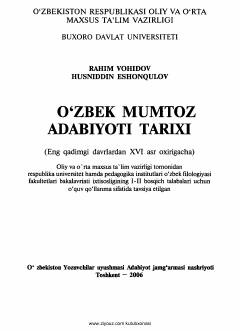

OMEng qadimgi davrlardan XVI asr oxirigacha boʻlgan oʻzbek mumtoz adabiyoti tarixi.
Mazkur oʻquv qoʻllanma eng qadimgi davrlardan XVI asr oxirigacha boʻlgan oʻzbek mumtoz adabiyoti tarixini yoritadi. Unda mumtoz adabiyot vakillari, adabiy yodgorliklar va tasavvuf ta'limotining badiiy adabiyotga ta'siri ilmiy-nazariy jihatdan tahlil qilingan. Kitob oliy oʻquv yurtlarining oʻzbek filologiyasi fakultetlari talabalari uchun moʻljallangan.